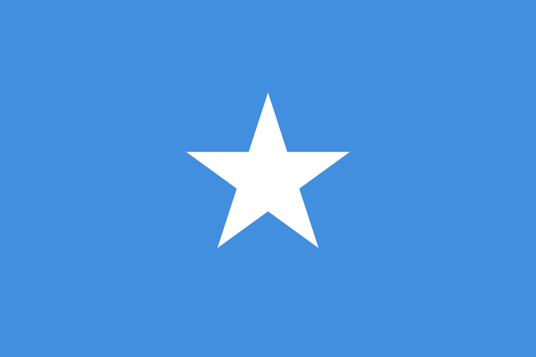
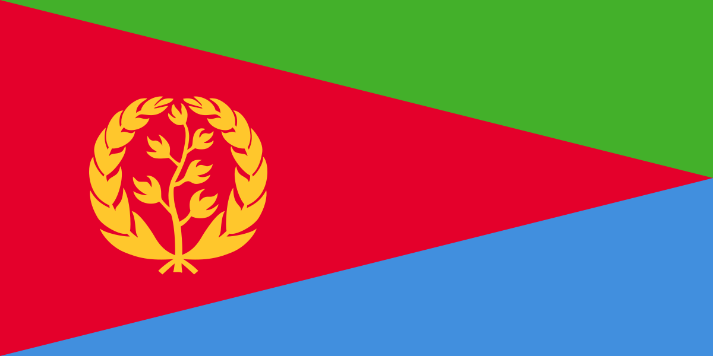

World Watch List 2026 · Open Doors
Молитва за гонимую церковь
388 млн+
христиан живут под сильным давлением
4 849
убиты за веру
4 712
задержаны
3 632
нападения на церкви и дома христиан

Северная Корея
№1 · 97

Сомали
№2 · 94
Йемен
№3 · 93

Судан
№4 · 92

Эритрея
№5 · 90